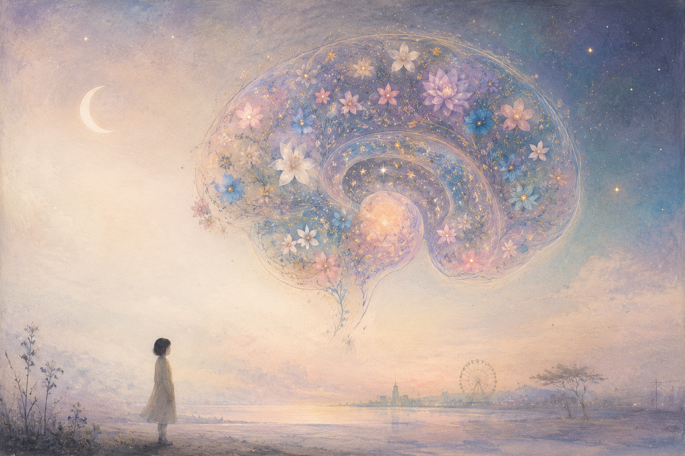
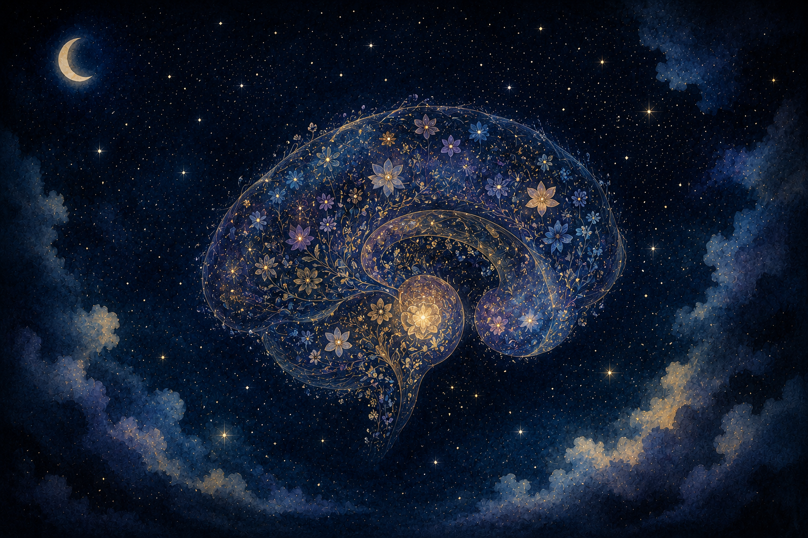
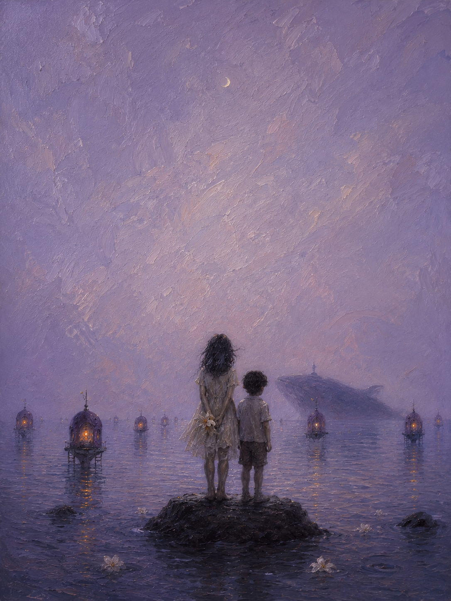
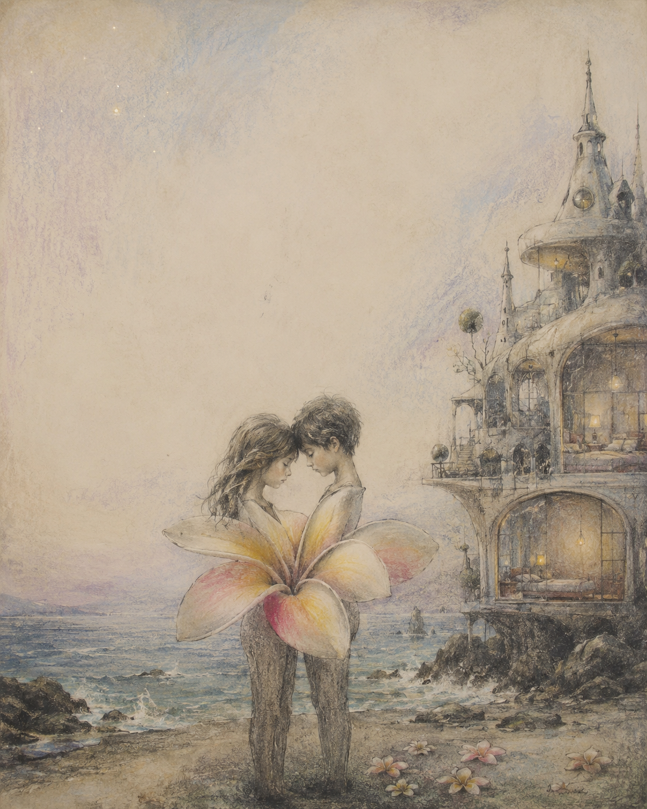

觀展人格生成
16 種人格、10 題測驗，依答題傾向生成不同的觀看方式。
為藝文場域設計的互動調查體驗。從觀眾的一次直覺選擇，讀出他們與展覽相遇的方式。

不只蒐集滿意度，更把觀眾的感受轉化為展覽可用的理解與連結。
16 種人格、10 題測驗，依答題傾向生成不同的觀看方式。
30 首籤詩，讓每次觀展收在獨特的回聲裡。
即時蒐集觀眾留言，留下作品與觀眾之間的真實回聲。
圖表化呈現人格、情緒與觀眾最常留言的主題。
為每種人格配上一張可帶走的展覽圖文卡。



十題互動問答、十六種觀展人格、專屬籤詩與分享卡，讓每一位觀眾都能帶走一段屬於自己的觀看記憶。
一個小小的回覆，能幫助我們準備下一次更好的相遇。
你的留言會匿名彙整到展覽後台，成為藝術家與觀眾之間下一次對話的開始。